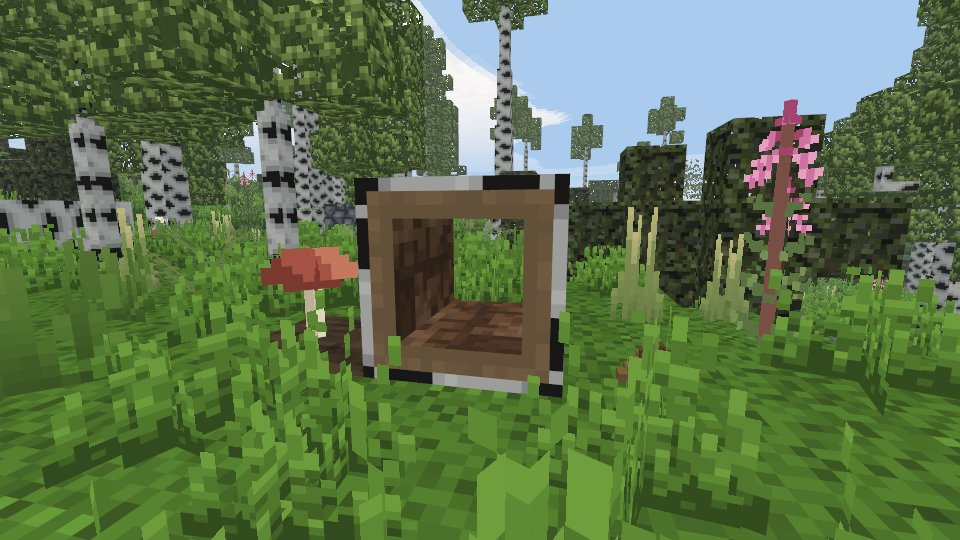

The world and the map
The world is a whole planet, a block to a metre. You read it the way you would read real country.
A planet
One seed is one planet. In the new-world form you choose its size, from the Earth's own (40,075 km round the equator, about 108 days on foot) down to a small planet you can walk round in about four hours. Trees, rivers, hills and lakes are full-size on every planet; only the belts and continents shrink.
Where you land is chosen from orbit (see Getting started). The panel names the continent and the country, says how warm and wet it is, how far the equator is and what lies within a day's walk.
- Walk east and you come back from the west. The planet wraps round in longitude; there is no wall or seam.
- North and south there are poles: past the taiga comes tundra, then an ice sheet with no trees and no fire. It kills those who come unprepared.
- The farther from the ocean, the drier. Steppe and desert lie deep inland; the coast is always greener than what is behind it. Around 20–30° from the equator lie the great deserts.
- Countries are hundreds of kilometres across. Changing country is days of travel, not an hour.
Next update: the landing screen gets a button in the lower-left corner of the globe that switches between four drawings of the same planet: pixels, a smooth lit globe, hexagon cells (click a cell to land in it) and an old parchment chart.
The land
- Hills: round grassy hills twenty to thirty blocks from hollow to top, woods in groves, streams in the hollows. This is copper country.
- Steppe: flat grass to the horizon, almost no trees, more wild grain than anywhere. Bring wood and water.
- Forest, birch forest, taiga and burnt dead forest (with ash lying between the trunks).
- Swamp and bog: peat, reeds, rusty stones.
- Savanna and desert in the hot belts; palm beaches on warm coasts.
- Mountains: ridges in belts about a hundred kilometres wide, a hundred to a hundred and sixty blocks above the sea, with snow on the peaks.
Rivers come in three sizes: streams a step or two wide, rivers about twelve blocks across, and great rivers about a hundred and ten wide that cannot be waded. Rivers run to the sea; follow one downstream and you reach the coast.

Signs in the landscape
The world shows you where to go, and none of these signs writes anything on screen:
- A pale strip along the water: gravel washed up by a river or lake. About one pebble in three there is flint.
- Trodden paths meeting at a pond: a watering place. Nothing grows on them, but stones lie there.
- Rubble and pebbles in a heap on a slope: a cave mouth.
- A greenish patch in a steep hillside: a copper outcrop. Rare; it means there is copper under this hill.
- A rock on a ridge (a tor): bare stone standing above the grass. Good to look around from.
- A level step above a river: a terrace, dry flat ground above the floodplain. A place to build.
- Smoke on the horizon: someone's fire. An open fire is visible from about sixty blocks, best from a hilltop.
- Cut banks on the outside of river bends show the layers: turf, earth, clay, stone.
Hollow logs next update
A hollow log is a fallen log with its core rotted out: one block, a tube a block long, open at both ends, in the bark of the forest's own wood (oak, birch, spruce, and willow in a swamp). You find them in woods as short fallen runs of one to four along one axis, on level ground beside ordinary fallen trunks, and sometimes lying in the shallow pools of a forest or a swamp, full of water.

- You can look through it, and small things fit inside (a hare, a thrown stone). A player does not.
- It breaks by hand about twice as fast as a sound fallen trunk (some four seconds) and drops whole, so it can be carried and laid again. It is always laid lying, never standing.
- The water inside stands level with the pool it lies in and enters and leaves only through the open ends. A log laid with its end to a pool fills to the pool's level; laid sideways, it stays dry. Break one out of a pool and the water stays where it was.
Underground
Below the country's own rock lie the same layers everywhere, each at its depth: grey stone, then limestone, then sandstone, and granite at the bottom. A thin clay seam often lies where sandstone meets limestone. Depth is hardness: limestone yields to flint, granite only to copper. Stalactites grow only in rocks water dissolves (limestone, chalk), so a ceiling of spikes tells you where you are. Do not jump onto stalagmites. Water in underground lakes has seeped through stone and is safe to drink.
Seasons and weather
A day is 30 minutes and a year 40 days, ten to a season. Winter is colder the farther from the equator: a cool week on the equator, a hard frost at sixty degrees. Snow settles on open ground in snowfall and melts in warmth. Thunderstorms throw lightning. Late summer can bring a drought. The moon goes through its phases over eight nights; under a full moon you can walk without a torch, on a moonless night you cannot.
Ice in layers in development
In development. Ice in layers is still being worked on, is not finished and may change. What follows is how it works in the current build.
In winter water freezes in patches from the shore, not at single random points: a patch starts at a bank, a wall or a jetty, or beside ice that is already there, and creeps out across the water. It begins as a thin sheet, from one eighth of a block to seven, and while the frost holds it thickens by an eighth at a time until it is a whole block. In spring it thins the same way.
- Frost makes it thicker: the harder the frost, the thicker the sheet. Shallows, coves and ponds sheltered from the wind by trees or walls freeze first; a deep lake and fast water take a hard frost.
- Fire makes it thinner: a campfire or a furnace by the shore keeps its own corner open and melts the ice round it.
- Thin ice breaks under weight, jumps and landings. Read the thickness from the picture. A sheet of one or two eighths gives way under anyone; from three eighths it holds a walker with no load, from four one with a pack, from five a jump, and a whole block holds everything. When it breaks, the cell under your feet and the thin ice in a ring around it turn to water, and you are swimming. The crack is heard.
Finding your way
The map is a thing you carry
There is no minimap and no map page until you make one. Map: 3 leather + 1 charcoal by hand (2 leather + 1 charcoal at a leather bench). M opens it, but only while a map is in your pack; holding it and right-clicking works too. Without one, M does nothing.
It fills in only where you walk with it in your pack, a band of about 48 blocks either side of your path, drawn as if by hand: coasts in ink, water hatched, mountains as little peaks, forest as crowns, your route as a red dotted line. A map made today is a map of tomorrow's road, so make it before a long trip.
The map has no "you are here" mark. Your own cairns and blazes are on it, and standing near one shows an arrow for which way you face.
The sky
Look at the sun and a line at the top of the screen says something like by the sun: north is to your left. At night the moon and, on clear moonless nights, the stars do the same: the pole star stands due north. Under cloud there is no hint; moss grows on the north side of stones and trunks.
Cairns and blazes
- Cairn: 6 pebbles by hand. Set it where you want to remember a place and name it. It goes on your map only if the map was in your pack when you set it.
- Blaze: hold a knife, hold Shift and right-click a standing trunk. It stays as long as the tree does.
Compass
Iron age. Mining iron ore sometimes drops a lodestone. A water compass is iron nails + lodestone + a handful of leaves + a bowl + a jug of water, by hand; the lodestone and jug come back. Held in the hand, it shows north in any weather, even underground.